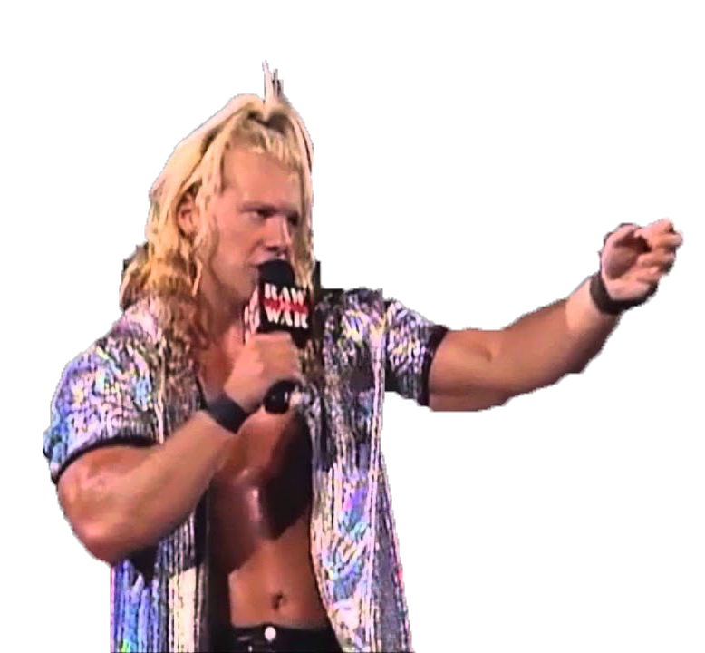
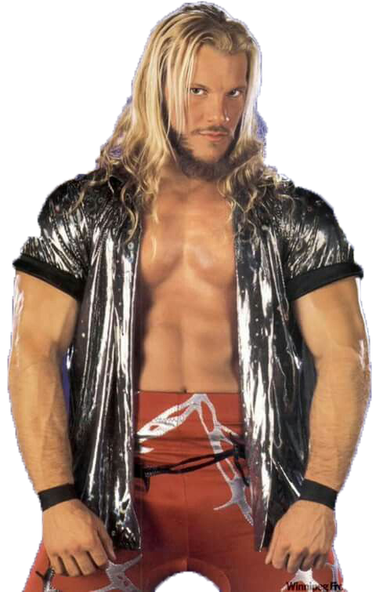

Chris Jerico made his debut in 2000...
Raw

Chris Jericho was the first undisputed champion.
Smackdown

Chris Jericho held the intercontinental championship 9 times.
Chris Jericho has had a great career in Professional Wrestling. He continues to this day going strong after 30yrs as well as performing with his band Fozzy.